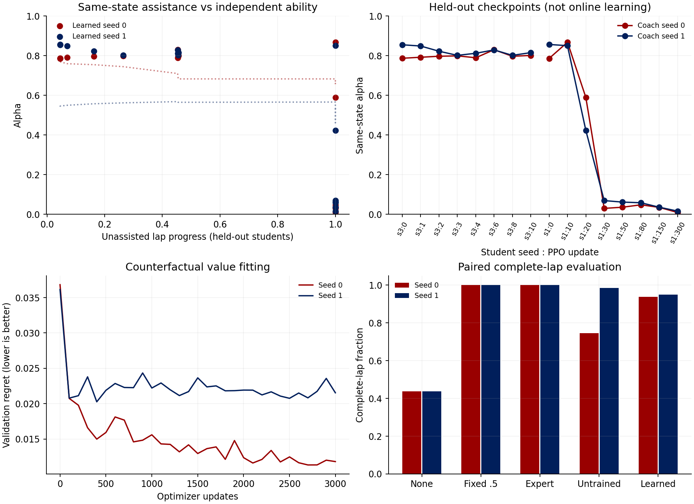
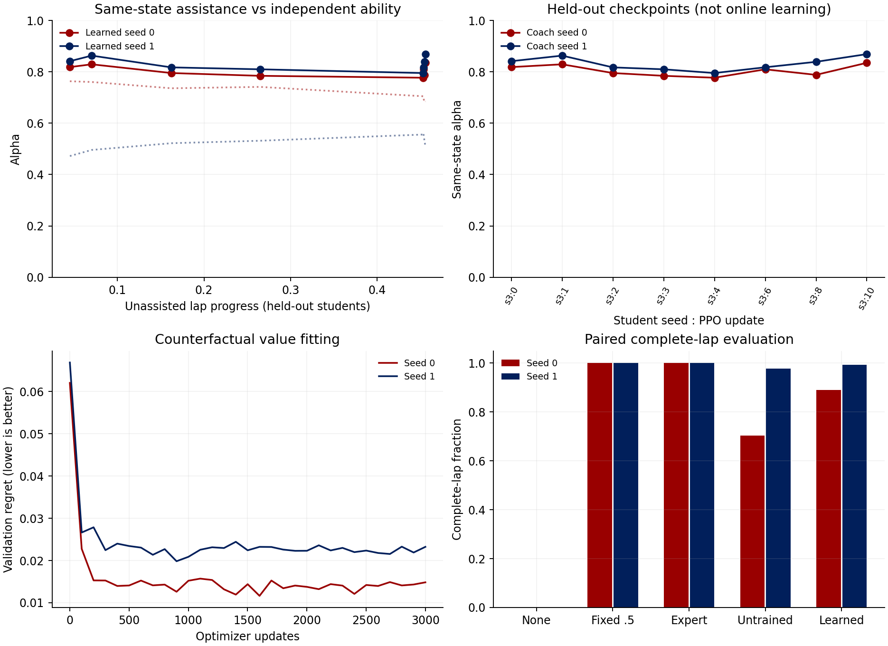
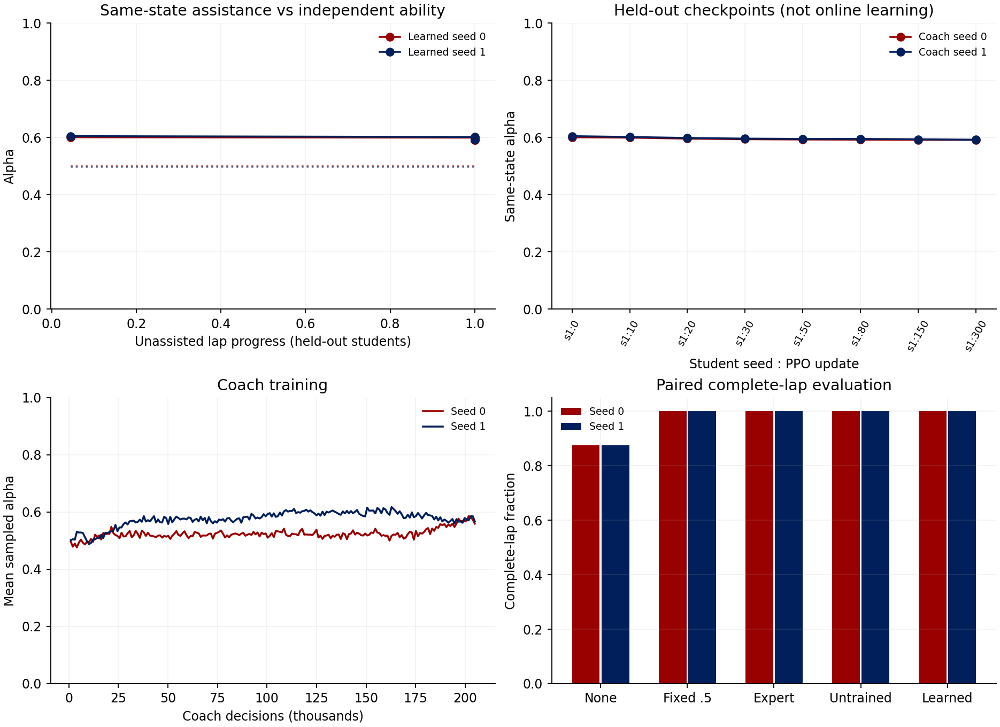

Coach Experiments
2026-09-17 · Spielberg · MuJoCo / MJX · Two independent Coach seeds
Alpha is learned assistance strength: 0 means student only, 1 means Expert only. Students here are frozen policy checkpoints, not humans or learners improving during a session. These experiments test adaptive assistance, not teaching benefit. Passing the alpha gate does not establish superiority to fixed assistance; check the safety results below.
Spatial alpha: compare colored trajectories on the track →
Mixed-ability action-value Coach
Did not meet the alpha-adaptation pilot gate
Seed 0: weak/strong alpha gap 0.758; rank correlation -0.412. Seed 1: weak/strong alpha gap 0.817; rank correlation -0.757.
Complete laps: Seed 0: learned 240/256, fixed 0.5 256/256, no help 112/256. Seed 1: learned 243/256, fixed 0.5 256/256, no help 112/256.

Per-student results and raw data
| Coach seed | Student seed:update | Solo laps | Same-state alpha | Coached laps | Driving alpha |
|---|---|---|---|---|---|
| 0 | s3:0 | 0.0% | 0.787 | 100.0% | 0.868 |
| 0 | s3:1 | 0.0% | 0.792 | 87.5% | 0.877 |
| 0 | s3:2 | 0.0% | 0.797 | 100.0% | 0.892 |
| 0 | s3:3 | 0.0% | 0.799 | 100.0% | 0.885 |
| 0 | s3:4 | 0.0% | 0.790 | 100.0% | 0.886 |
| 0 | s3:6 | 0.0% | 0.830 | 100.0% | 0.888 |
| 0 | s3:8 | 0.0% | 0.797 | 100.0% | 0.872 |
| 0 | s3:10 | 0.0% | 0.801 | 100.0% | 0.867 |
| 0 | s1:0 | 0.0% | 0.786 | 31.2% | 0.820 |
| 0 | s1:10 | 100.0% | 0.868 | 100.0% | 0.916 |
| 0 | s1:20 | 100.0% | 0.590 | 81.2% | 0.640 |
| 0 | s1:30 | 100.0% | 0.030 | 100.0% | 0.069 |
| 0 | s1:50 | 100.0% | 0.036 | 100.0% | 0.066 |
| 0 | s1:80 | 100.0% | 0.048 | 100.0% | 0.041 |
| 0 | s1:150 | 100.0% | 0.035 | 100.0% | 0.033 |
| 0 | s1:300 | 100.0% | 0.009 | 100.0% | 0.019 |
| 1 | s3:0 | 0.0% | 0.855 | 100.0% | 0.917 |
| 1 | s3:1 | 0.0% | 0.849 | 93.8% | 0.920 |
| 1 | s3:2 | 0.0% | 0.822 | 87.5% | 0.905 |
| 1 | s3:3 | 0.0% | 0.802 | 81.2% | 0.869 |
| 1 | s3:4 | 0.0% | 0.812 | 68.8% | 0.873 |
| 1 | s3:6 | 0.0% | 0.829 | 100.0% | 0.888 |
| 1 | s3:8 | 0.0% | 0.802 | 100.0% | 0.872 |
| 1 | s3:10 | 0.0% | 0.815 | 100.0% | 0.868 |
| 1 | s1:0 | 0.0% | 0.857 | 87.5% | 0.903 |
| 1 | s1:10 | 100.0% | 0.850 | 100.0% | 0.930 |
| 1 | s1:20 | 100.0% | 0.423 | 100.0% | 0.459 |
| 1 | s1:30 | 100.0% | 0.069 | 100.0% | 0.050 |
| 1 | s1:50 | 100.0% | 0.062 | 100.0% | 0.099 |
| 1 | s1:80 | 100.0% | 0.058 | 100.0% | 0.030 |
| 1 | s1:150 | 100.0% | 0.036 | 100.0% | 0.031 |
| 1 | s1:300 | 100.0% | 0.016 | 100.0% | 0.016 |
Early-student action-value Coach (negative result)
Early-student action-value Coach (negative result)
Did not meet the alpha-adaptation pilot gate
Seed 0: weak/strong alpha gap 0.003; rank correlation -0.048. Seed 1: weak/strong alpha gap -0.001; rank correlation 0.071.
Complete laps: Seed 0: learned 114/128, fixed 0.5 128/128, no help 0/128. Seed 1: learned 127/128, fixed 0.5 128/128, no help 0/128.

Per-student results and raw data
| Coach seed | Student seed:update | Solo laps | Same-state alpha | Coached laps | Driving alpha |
|---|---|---|---|---|---|
| 0 | s3:0 | 0.0% | 0.819 | 81.2% | 0.895 |
| 0 | s3:1 | 0.0% | 0.829 | 68.8% | 0.876 |
| 0 | s3:2 | 0.0% | 0.795 | 93.8% | 0.872 |
| 0 | s3:3 | 0.0% | 0.785 | 100.0% | 0.870 |
| 0 | s3:4 | 0.0% | 0.777 | 75.0% | 0.860 |
| 0 | s3:6 | 0.0% | 0.810 | 100.0% | 0.868 |
| 0 | s3:8 | 0.0% | 0.788 | 93.8% | 0.862 |
| 0 | s3:10 | 0.0% | 0.835 | 100.0% | 0.906 |
| 1 | s3:0 | 0.0% | 0.842 | 100.0% | 0.901 |
| 1 | s3:1 | 0.0% | 0.863 | 100.0% | 0.937 |
| 1 | s3:2 | 0.0% | 0.817 | 93.8% | 0.879 |
| 1 | s3:3 | 0.0% | 0.810 | 100.0% | 0.871 |
| 1 | s3:4 | 0.0% | 0.795 | 100.0% | 0.882 |
| 1 | s3:6 | 0.0% | 0.818 | 100.0% | 0.885 |
| 1 | s3:8 | 0.0% | 0.839 | 100.0% | 0.913 |
| 1 | s3:10 | 0.0% | 0.869 | 100.0% | 0.910 |
Initial PPO Coach (negative result)
Initial PPO Coach (negative result)
Did not meet the alpha-adaptation pilot gate
Seed 0: weak/strong alpha gap 0.007; rank correlation -0.577. Seed 1: weak/strong alpha gap 0.008; rank correlation -0.577.
Complete laps: Seed 0: learned 128/128, fixed 0.5 128/128, no help 112/128. Seed 1: learned 128/128, fixed 0.5 128/128, no help 112/128.

Per-student results and raw data
| Coach seed | Student seed:update | Solo laps | Same-state alpha | Coached laps | Driving alpha |
|---|---|---|---|---|---|
| 0 | s1:0 | 0.0% | 0.601 | 100.0% | 0.602 |
| 0 | s1:10 | 100.0% | 0.600 | 100.0% | 0.602 |
| 0 | s1:20 | 100.0% | 0.596 | 100.0% | 0.597 |
| 0 | s1:30 | 100.0% | 0.594 | 100.0% | 0.594 |
| 0 | s1:50 | 100.0% | 0.593 | 100.0% | 0.593 |
| 0 | s1:80 | 100.0% | 0.593 | 100.0% | 0.592 |
| 0 | s1:150 | 100.0% | 0.592 | 100.0% | 0.592 |
| 0 | s1:300 | 100.0% | 0.592 | 100.0% | 0.593 |
| 1 | s1:0 | 0.0% | 0.605 | 100.0% | 0.608 |
| 1 | s1:10 | 100.0% | 0.602 | 100.0% | 0.607 |
| 1 | s1:20 | 100.0% | 0.599 | 100.0% | 0.600 |
| 1 | s1:30 | 100.0% | 0.596 | 100.0% | 0.597 |
| 1 | s1:50 | 100.0% | 0.595 | 100.0% | 0.595 |
| 1 | s1:80 | 100.0% | 0.595 | 100.0% | 0.594 |
| 1 | s1:150 | 100.0% | 0.594 | 100.0% | 0.593 |
| 1 | s1:300 | 100.0% | 0.592 | 100.0% | 0.593 |
Protocol and interpretation
The Coach sees physical observations and proposed student/Expert actions, not student level, identity or training time. Counterfactual branches apply help briefly, then measure solo driving with help removed. The second version regresses action values from 11 candidate actions and chooses the predicted best value. It is finite-horizon counterfactual value regression, not a successful PPO or infinite-horizon Q-learning result.
Each condition uses 16 paired starts per held-out student and a 120-second limit. Controls include no assistance, fixed 0.5, full Expert and an untrained Coach. Same-state alpha is evaluated on shared Expert-visited states, not different driving trajectories. Complete laps score 1 regardless of small projection errors at termination. No alpha schedule or desired downward trend is a training target.
A curve alone is insufficient: compare independent ability, assisted safety and baseline performance. No claim of human learning, retained learning, cross-track generalization or causal superiority of the counterfactual objective is established.